Overview
Introduction
Task 1
First Cycle (45 mins)
Task 2
Second Cycle (45 mins)
Task 3
Final Submit
Ensure Your Portfolio Meets Assessment Criteria
Checklist + Document Progress + Upload
Checklist + Document Progress + Upload
Final Review & Submit
Objective: This session is about ensuring your portfolio meets the assessment criteria and tells your story clearly and creatively.
You will work through a checklist game to review key areas of your portfolio, then document your progress with screenshots and reflection notes.
How it works: You'll complete two cycles. In each cycle, you'll choose one area from the checklist to review, make improvements to your portfolio, document your progress, and upload to Padlet.
Have you properly credited your sources? Use this format for citing artists:
Format:
Artist's Last Name, First Initial. (Year). Title of the work [Image].
Example:
Turner, L. (2018). Abstract concepts in digital art [Image].
Step 1: Choose ONE suggestion from the checklist below to focus on. Click "Example" to see what good work looks like.
A good project title should:
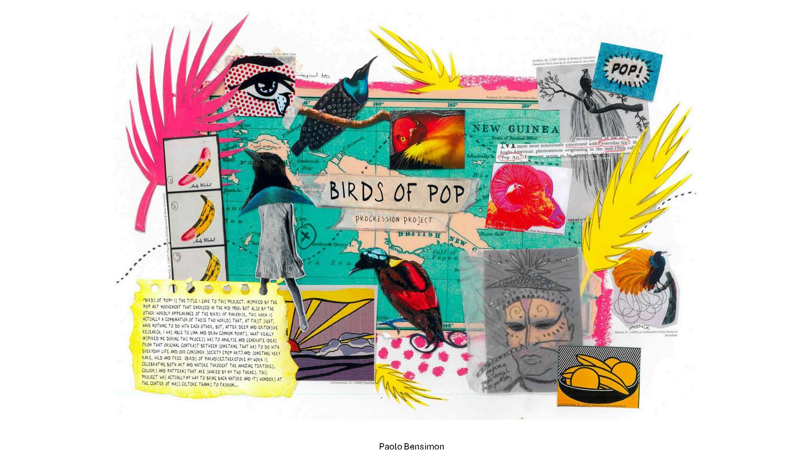
Context should include:
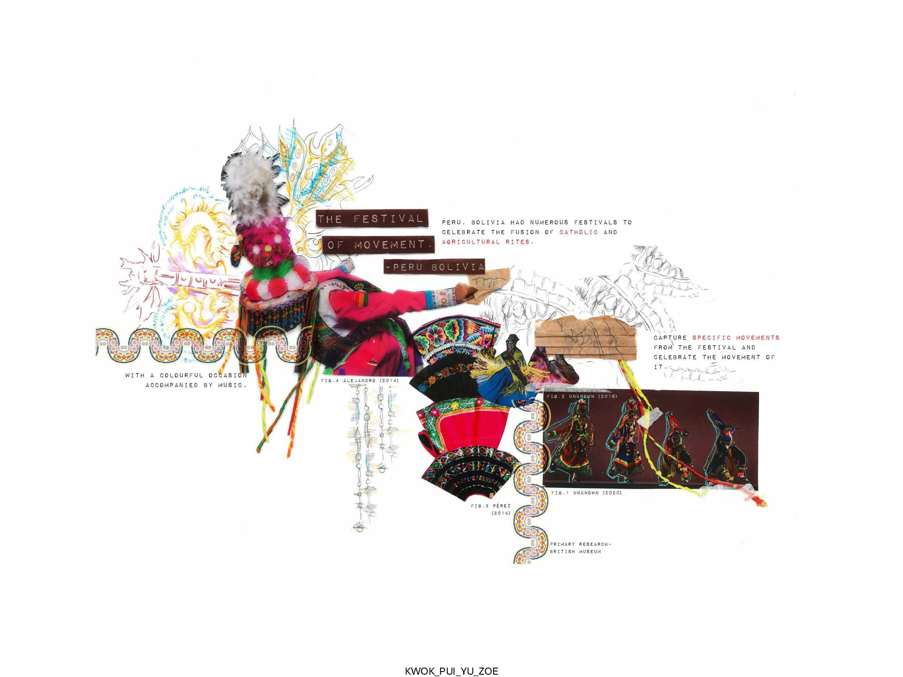
Strong visuals should:
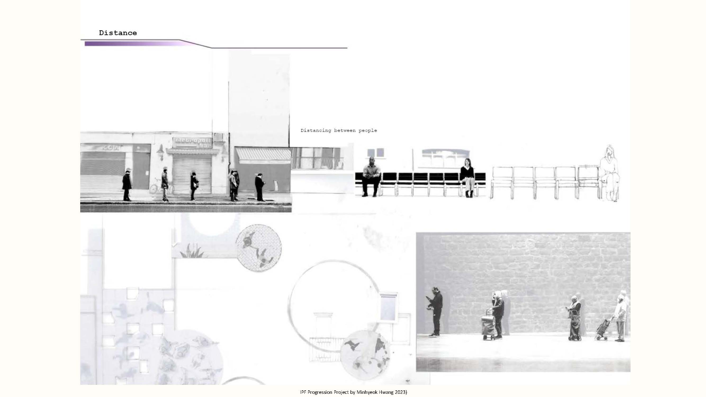
A roadmap helps the viewer:

Good subheadings:
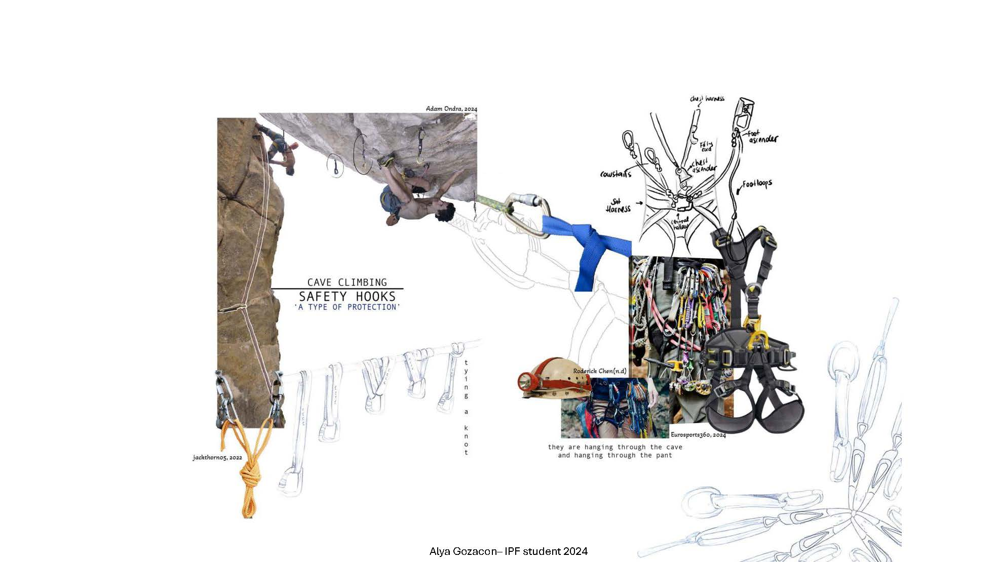
Strong research pages show:
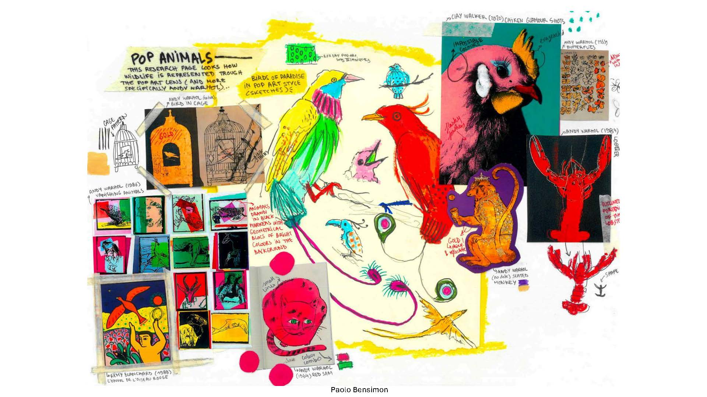
Design development should include:
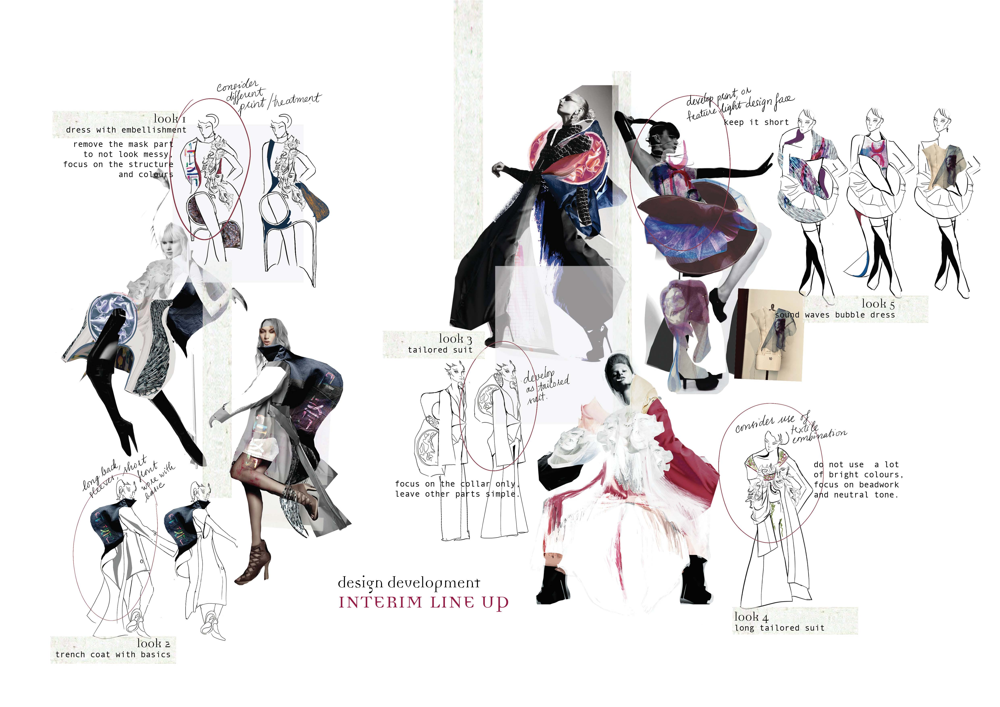
Refinement pages should show:
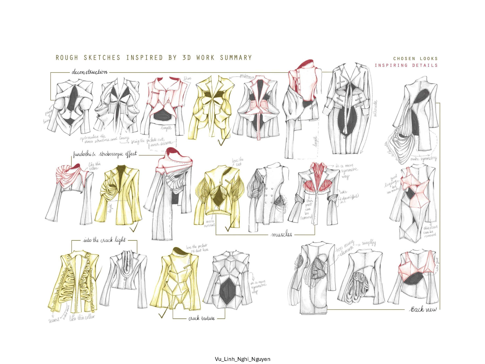
Proper referencing includes:
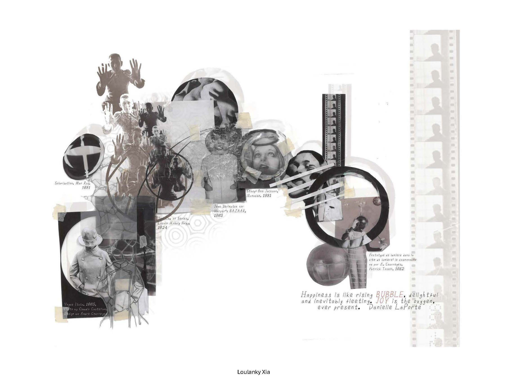
A strong colour palette:
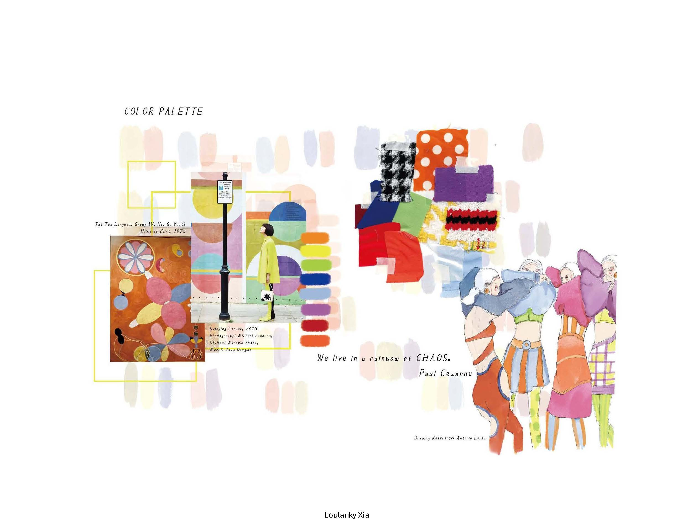
Good typography:
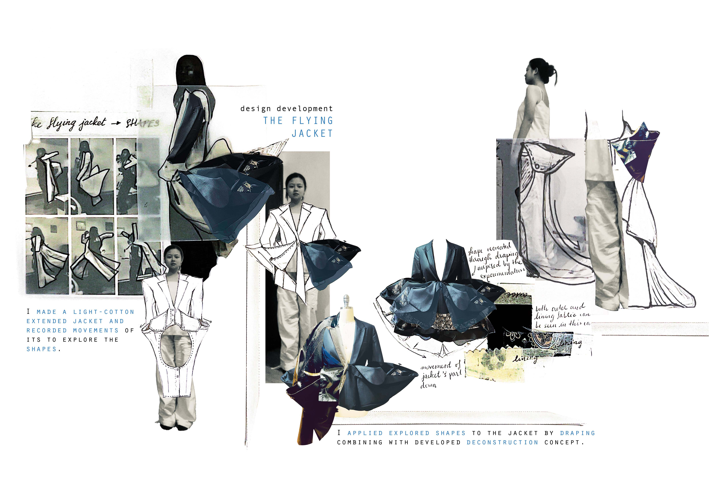
Strong visual elements:
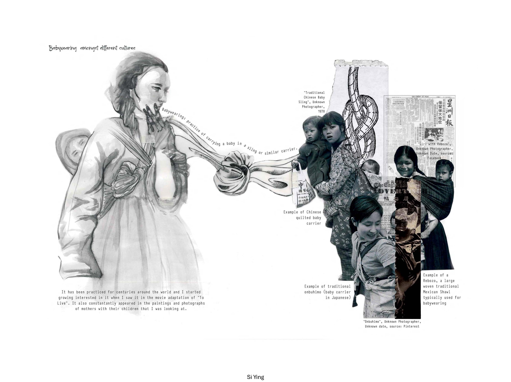
After making improvements to your chosen area, document your work using the Progress Documentation Tool.
Write brief notes about:
Save your progress report and upload to Padlet with your name as the title.
Use this interactive tool to capture and organise your progress screenshots with notes.
Open Progress Tool →Save your documentation as JPEG, add your name as the title, then upload.
Once you've uploaded Task 1, move on to Task 2 and choose a different area from the checklist to improve!
Step 1: Return to the checklist and choose a DIFFERENT area to focus on.
Go back to Task 1 to view the full checklist and choose your second area to improve.
After making improvements to your second chosen area, document your work.
Write brief notes about:
Save your progress report and upload to Padlet with your name as the title.
Use this interactive tool to capture and organise your progress screenshots with notes.
Open Progress Tool →Save your documentation as JPEG, add your name as the title, then upload.
Check that you have uploaded both progress reports to Padlet.
Progress report for your first checklist area
Include: Screenshot + Notes + Your Name
Progress report for your second checklist area
Include: Screenshot + Notes + Your Name
Select "Upload" or drag your file directly onto the wall.
Important: Save your work in JPEG format before uploading.
After upload, click the title space above your image and type your full name as the title.
Make sure both Task 1 and Task 2 uploads appear clearly before leaving the page.